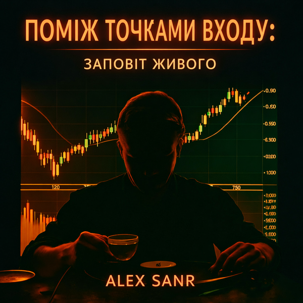

 Поміж точками входу. Заповіт живого 🇺🇦 Українська20269 треків ♪ Слухати ↗ Поділитися Треки 1Вхід у вихідтекст → 2Крізь іскритекст → 3Повернення із небуттятекст → 4Чотири сторонитекст → 5Прийняття. Біль як провідниктекст → 6Сила без силитекст → 7Поверненнятекст → 8Пробудження. Голоси Всесвітутекст → 9Дух біржітекст →